Lab Members at Censored Planet
Director

Roya Ensafi is an associate professor of computer science and engineering at the University of Michigan, where her research focuses on Internet security and privacy, with the goal of creating techniques and systems to better protect users online. She is particularly passionate about online censorship, geo-discrimination, surveillance, and related threats to Internet freedom. Prof. Ensafi is the founder of Censored Planet, a global censorship observatory. She has studied Russia's throttling of Twitter, HTTPS interception in Kazakhstan, and China's Great Cannon attack, among many other instances of network interference. She is a recipient of the Sloan Research Fellowship, NSF CAREER, Google Faculty Research Award, multiple IRTF Applied Networking Research Prizes, and the Consumer Reports Digital Lab fellowship. Her work has been cited in popular publications such as The New York Times, Newsweek, Business Insider, Wired, and Ars Technica.
Current Lab Members
-
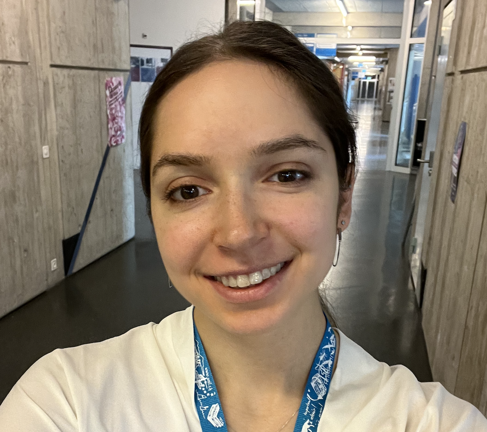
Anna Ablove
PhD Student
-
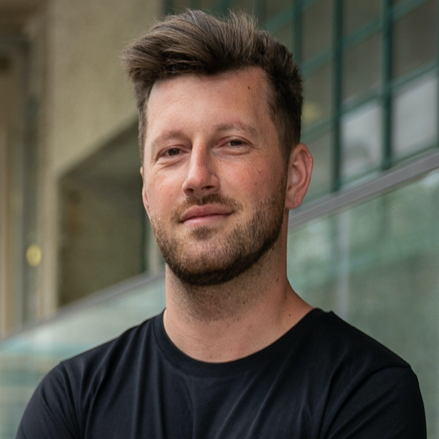
Armin Huremagic
Lead Engineer & Researcher
-
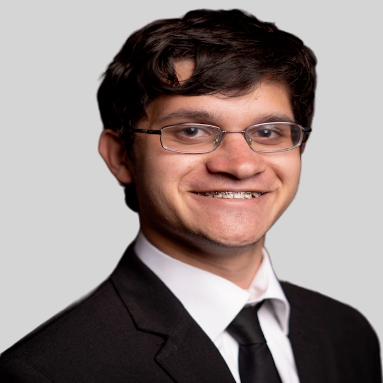
Aaron Ortwein
PhD Student
-
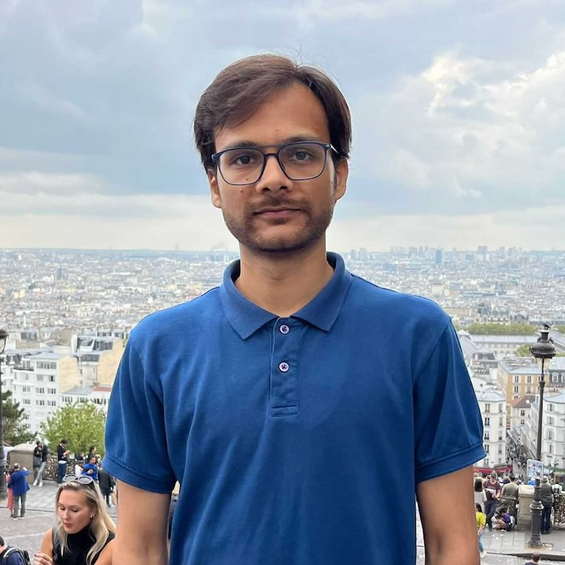
Piyush Kumar
Postdoctoral Researcher
-
Robert Stanley
Undergraduate Student
-
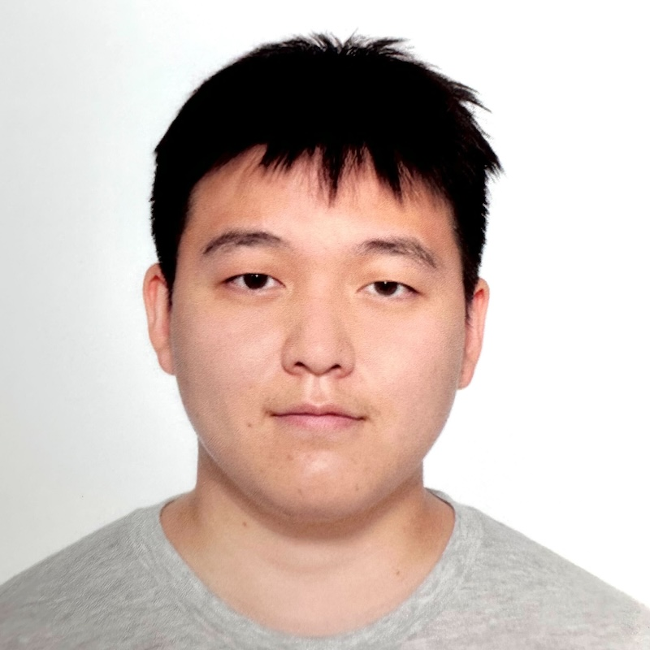
Diwen Xue
PhD Student
-
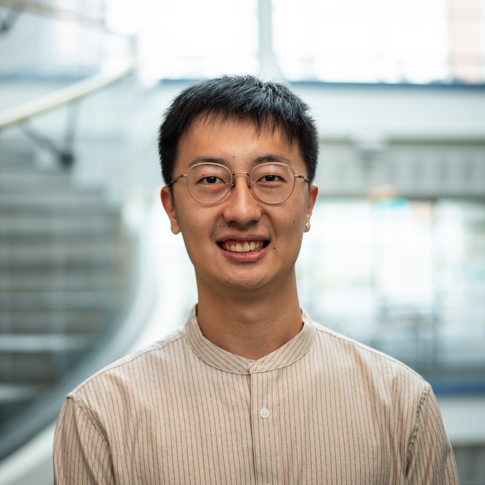
Wayne Wang
PhD Student
Lab Alumni
-
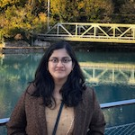
Reethika Ramesh
Senior Staff Researcher Palo Alto Networks
-
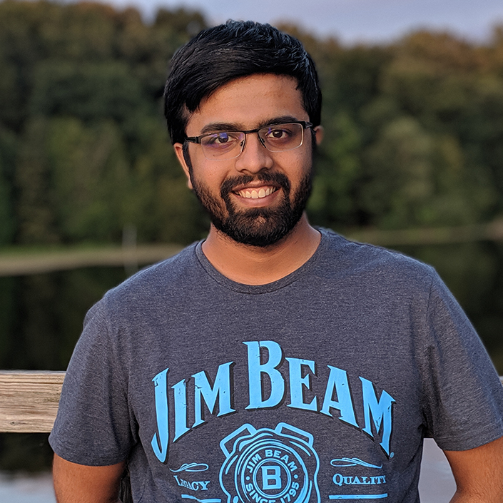
Ramakrishnan Sundara Raman
Assistant Professor UC Santa Cruz
-
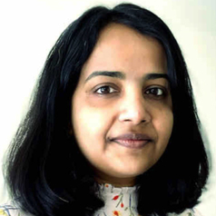
Renuka Kumar
Software Engineer IV, Cisco
-
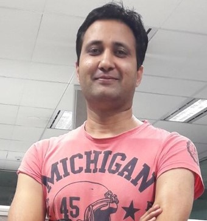
Muhammad Ikram
Lecturer, Macquarie University
-
Gavin Li
Graduate Student, Stanford
-
Apurva Virkud
PhD Student, UIUC
-
Kevin Wang
Undergraduate Student
-
Arham Jain
Software Engineer, Google
-
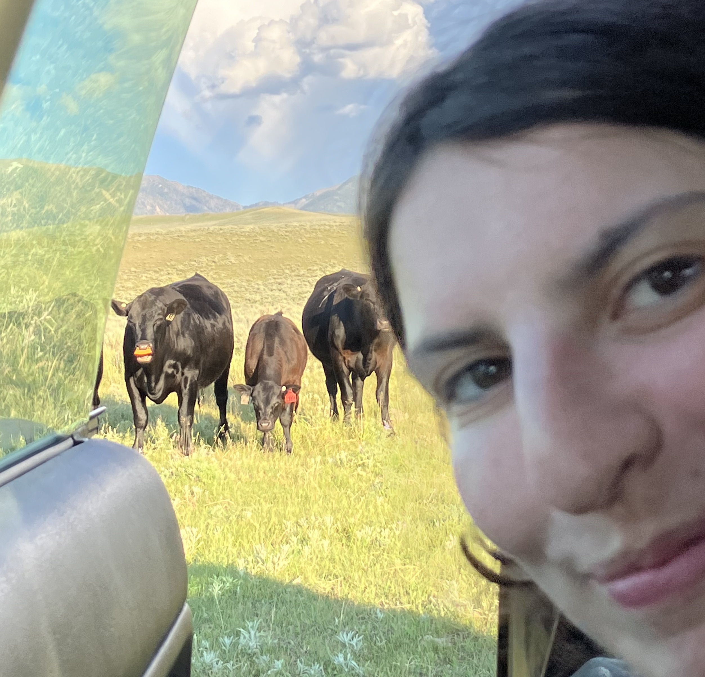
Yael Eiger
PhD Student, Washington University
-
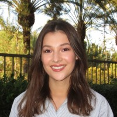
Kyle Astroth
Role
-
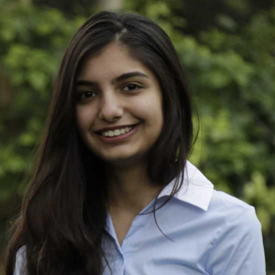
Anjali Vyas
Masters Student, Cornell Tech
-
Rose Ceccio
PhD Student, Wisconsin,Madison
-
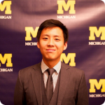
Victor Ongkowijaya
PhD Student, Princeton
-
Adrian Stoll
Software Engineer, Google
-
Prerana Shenoy
Product Security Engineer, Atlassian
-
Leonid Evdokimov
Freelancer & Contractor, The Tor Project
-
Elio Qoshi
Ura Design